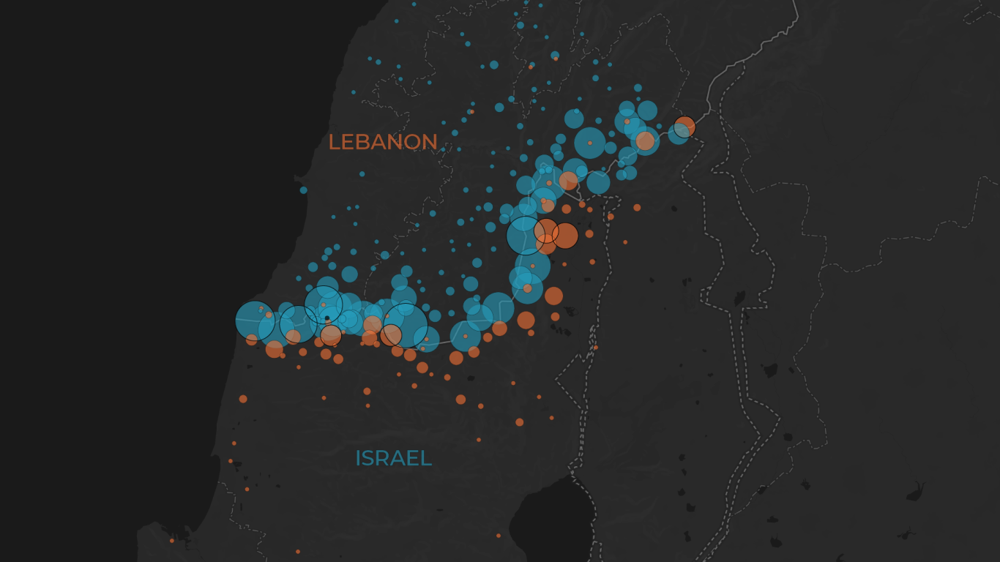
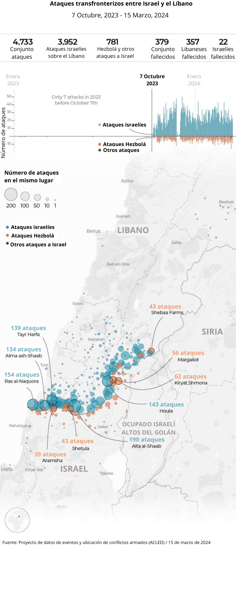
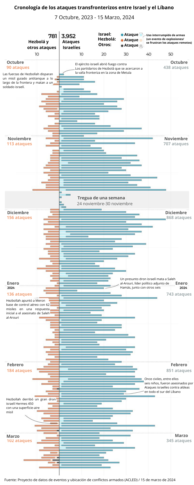
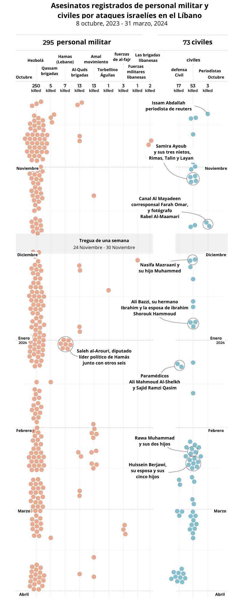
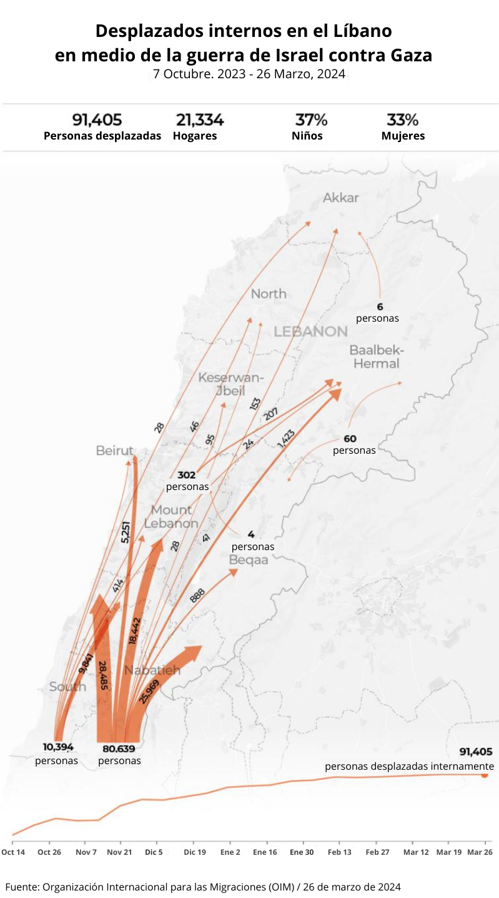
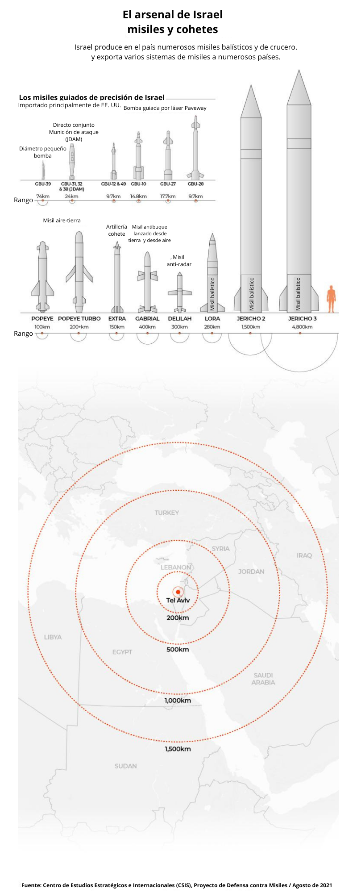
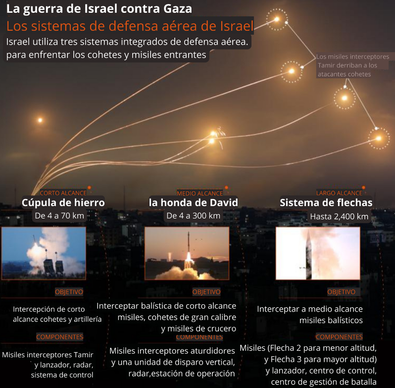
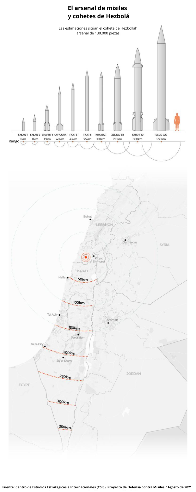

Mientras Israel continúa su guerra contra Gaza en su séptimo mes, aproximadamente dos horas al norte, ha estado librando una guerra paralela a lo largo de la frontera con el Líbano que amenaza con un conflicto regional más amplio.
Desde el 8 de octubre , cuando Hezbollah del Líbano lanzó ataques contra Israel en solidaridad con el pueblo palestino, Israel lo ha atacado casi 4.000 veces a lo largo de los 120 kilómetros (75 millas) de frontera.
Hezbolá se formó en 1982 para luchar contra la invasión y ocupación israelí del sur del Líbano. En 2006, el grupo libró una guerra de 34 días ampliamente considerada como un fracaso estratégico y militar para Israel.
El jefe de Hezbollah, Hassan Nasrallah, no llegó a declarar una guerra total contra Israel, pero dijo que sus fuerzas no tienen miedo de involucrarse en una.
Hezbollah dice que sus operaciones militares contra Isrel continuarán hasta que cese el ataque israelí a Gaza. En respuesta, los líderes israelíes prometieron expulsar a Hezbolá del sur del Líbano, aunque fuera por la fuerza.

Mapeo de los ataques
transfronterizos entre Israel y
el Líbano
transfronterizos entre Israel y
el Líbano
Los ataques
Según el Proyecto de Datos de Eventos y Ubicación de Conflictos Armados ( ACLED ), Israel, Hezbolá y otros grupos armados en el Líbano intercambiaron al menos 4.733 ataques a través de la frontera entre el 7 de octubre de 2023 y el 15 de marzo de 2024.
Israel llevó a cabo alrededor del 83 por ciento de estos ataques, con un total de 3.952 incidentes, mientras que Hezbolá y otros grupos armados fueron responsables de 781 ataques.
Alrededor del 65 por ciento de todos los ataques fueron ataques de artillería o misiles, el 25 por ciento fueron ataques aéreos o con drones y el 10 por ciento restante fueron enfrentamientos armados, destrucción de propiedades, explosivos remotos o dispositi-
vos explosivos improvisados (IED).
Además de Hezbollah, que sufrió la peor parte de las hostilidades, otras fuerzas notables involucradas en ataques contra Israel incluyen las Fuerzas libanesas al-Fajr y el Movimiento Amal, así como las Brigadas Qassam de Hamás y las Brigadas Al-Quds de
la Jihad Islámica, ambas alas armadas del Grupos palestinos que mantienen presencia
en el Líbano.

Israel ha atacado más estos lugares en el sur del Líbano:
1.Aita al-Shaab - 190
2.Ras al-Naqura - 154
3.Houla - 143
4.Tayr Harfa - 139
5.Alma ash-Shaab - 134
Los grupos del Líbano atacaron más estos lugares en el norte de Israel:
1.Kiryat Shemona - 62
2.Margaliot - 56
3.Shetula - 43
4.Granjas de Shebaa - 43
5.aramsha - 39
Cronología de los ataques
Aviones y aviones no tripulados israelíes han atacado objetivos en todo el Líbano y en
la vecina Siria con impunidad durante meses.
En los últimos seis meses, Hezbollah y otros grupos armados realizaron un promedio
de cinco ataques contra Israel por día, mientras que Israel ha llevado a cabo cinco veces
más, alrededor de 25 ataques contra el Líbano por día, según ACLED.
ACLED también registró al menos 137 intercepciones de misiles de Hezbolá por parte
de Israel y ocho intercepciones de drones o misiles israelíes por parte de Hezbolá.
El 12 de octubre, el ejército israelí anunció que un soldado de reserva había muerto en
un ataque con misiles guiados antitanque de Hezbollah.
Al día siguiente, el 13 de octubre, las fuerzas israelíes mataron al periodista de Reuters
Issam Abdallah e hirieron a otros seis reporteros, incluidos dos de Al Jazeera, mientras
filmaban bombardeos transfronterizos.
Una investigación de la ONU encontró que soldados israelíes habían disparado dos ba-
las de 120 mm desde un tanque Merkava contra el grupo de “periodistas claramente
identificables”, en violación del derecho internacional.
El 24 de noviembre entró en vigor una tregua de una semana en Gaza. Durante este
tiempo, ACLED registró al menos nueve ataques por parte de Israel contra el Líbano y
no se registró ningún ataque del lado libanés.
El 2 de enero, un presunto ataque con drones israelíes mató a Saleh al-Arouri , líder
político adjunto de Hamas, en Beirut junto con otras seis personas.
El asesinato de al-Arouri pareció provocar un cambio en el enfoque de Hezbollah
cuando atacó la base de control aéreo de Meron con 62 misiles de varios tipos, el 6 de
enero.
El 26 de febrero, aviones israelíes llevaron a cabo tres ataques aéreos contra la aldea de
Buday, cerca de Baalbek, un bastión de Hezbollah en el valle de Bekaa, la primera vez
que Israel atacó el este del Líbano desde el 7 de octubre.

368 personas asesinadas
Utilizando informes de los medios locales y declaraciones de Hezbollah y otros gruposarmados, Al Jazeera compiló una lista de 368 personas muertas en ataques israelíes
contra el Líbano del 8 de octubre al 31 de marzo.
Los ataques israelíes han matado al menos a 295 combatientes de Hezbolá y otros gru-
pos armados en el Líbano en los últimos seis meses, así como a unos 73 civiles, entre
ellos niños, médicos y periodistas.
El 14 de febrero, dos ataques aéreos israelíes contra ciudades del sur del Líbano mata-
ron al menos a 10 civiles, incluidos siete miembros de la misma familia, uno de los cua-
les era un niño.
El lanzamiento de cohetes de Hezbollah ha matado a alrededor de una docena de sol-
dados israelíes y a la mitad de civiles.

Decenas de miles de desplazados
Según la Organización Internacional para las Migraciones (OIM), más de 90.000 per-
sonas han sido desplazadas por los combates en el sur del Líbano.
La gran mayoría (96 por ciento) de los desplazados provienen de tres áreas a lo largo
de la frontera sur del Líbano: el 71 por ciento de Bint Jbeil, el 14 por ciento de Marja-
youn y el 11 por ciento de Tiro.
Según estimaciones del Consejo de Gobierno del Sur, unas 700 viviendas fueron des-
truidas y más de 10.000 dañadas por los ataques israelíes, especialmente en Dhayra y
Blida. Además, los ataques israelíes destruyeron decenas de vehículos, así como infra-
estructuras de agua, electricidad y comunicaciones.
Del lado israelí, se ordenó a los residentes de 28 ciudades y aldeas dentro de un radio
de 2 kilómetros (1,2 millas) de la frontera que evacuaran.

El arsenal de Israel
Israel posee los misiles más avanzados de Medio Oriente, muchos de los cuales pro-duce en el país, pero la mayoría de sus misiles guiados con precisión son de Estados
Unidos.
Según el Centro de Estudios Estratégicos e Internacionales ( CSIS ), gran parte de las
capacidades de Israel son sistemas tácticos de corto alcance, incluidos los misiles Po-
peye, Extra y Gabriel.
Entre los misiles de largo alcance de Israel se encuentran sus misiles balísticos Jericho
2 y Jericho 3 con un alcance de 1.500 a 3.500 kilómetros
y 4.800 a 6.500 kilómetros respectivamente.
Además, a pesar de no reconocerlo oficialmente, se cree que Israel posee al menos 90
armas nucleares.

Para hacer frente a los cohetes y misiles entrantes, Israel utiliza tres sistemas integra-
dos de defensa aérea: la Cúpula de Hierro (de corto alcance), la Honda de David (de
medio alcance) y la Flecha (de largo alcance).
Originalmente se anunció que la Cúpula de Hierro proporcionaría cobertura del ta-
maño de una ciudad contra cohetes con alcances de entre 4 y 70 kilómetros (2,5 a 43
millas), pero los expertos dicen que esto se ha ampliado.
El David's Sling, producido por el gigante armamentístico israelí Rafael, puede inter-
ceptar cohetes y misiles con un alcance de 40 a 300 kilómetros (25 a 186 millas), mien-
tras que el Arrow, liderado por el interceptor Arrow 3, tiene un alcance estimado de
hasta 2.400 kilómetros ( 1.491 millas).

El arsenal de Hezbollah
Se considera que Hezbolá es uno de los actores no estatales más fuertemente armados
del mundo, con un arsenal de cohetes que se estima que contiene 130.000 piezas, se-
gún el CSIS.
El 19 de octubre, el Instituto de Investigación de Seguridad Nacional de Israel publicó
estimaciones del arsenal de misiles y drones de Hezbollah.
Hezbollah, decía, tenía 40.000 misiles tipo grad, con un alcance corto de 15 a 20 kiló-
metros (9 a 12 millas).
Un paso adelante son los 80.000 misiles de mayor alcance, incluidos los misiles balísti-
cos Fajr 3 y Fajr 5, con un alcance de 100 kilómetros (62 millas).
Finalmente, hay alrededor de 30.000 misiles Zelzal o Fateh-110 con un alcance de 200
a 300 kilómetros (124 a 186 millas), las armas de mayor alcance en el inventario de
Hezbollah capaces de llegar al sur de Israel.
